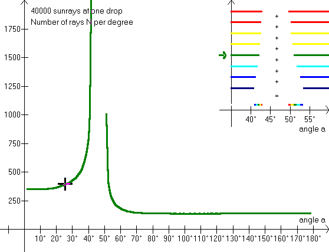
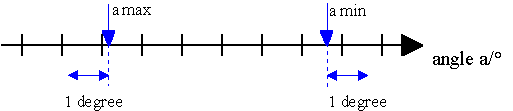
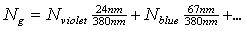

By looking at this illustration we can see the color composition of the rainbow. The 40000 rays fall on the drop from the bottom to the top edge, and the program calculates the number, N, of rays within each degree (from 0� to 180�). Only red colors are scattered into the angle intervals: 42,4� - 42,7� and 49,8� - 50,4�. (compare with exercise 3). So red is a 팺ure� color. (Quotation marks because red is not a color, but an interval of wavelengths.) The eye's perception of the light in each interval depends on how many colors it contains, and how intensive each color is. In a data book a table of �Visual light� can be found:
Visual light:
violet 400 - 424 nm
blue 424 - 491 nm
green 491 - 575 nm
yellow 575 - 585 nm
orange 585 - 647 nm
red 647 - 780 nm.
F6 provides the light for each color with a correction for the light which is scattered out of the drop before reaching us. F5 provides a corrected sum of all colors, with all values multiplied by 10, however. For further explanation, see 팺olarization�
As the rainbows have a width of only 2�-3�, it is too inaccurate merely to calculate the number of rays per degree instead of each half degree, but remember that the sunlight comes from a disk with a width of 0,53�. Also notice that interference and polarization influences the light that is scattered in the drop. The program calculates the number of rays per degree, placing the intervals next to Alexander's dark band. This means that the maximum for each color is calculated correctly (the cursor can be slightly displaced, though). See also problem 10.

Exercise 12
What is the color of the scattered light outside the rainbows themselves?
Into which interval of angles are the rays from the upper half of the drop scattered? (You might want to go back to 틻lexander's band�.)
And into which interval of angles from the lower half of the drop?
Assume that the light is scattered evenly throughout these angles and calculate the number of rays per degree.
Exercise 13
Calculate the weighted average of the scattered colors using the equation

,finding the N's on the screen, e.g. at the angle a = 40�; the numbers are calculated from the table �Visual light�.